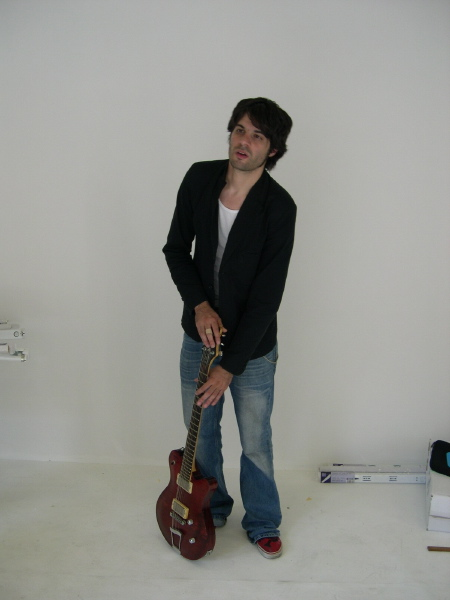

| <--- |  |
---> |
kriton
Belichtungsart: program (auto)
Art der Belichtungsmessung: matrix
Belichtungszeit: 0.012 s (1/86)
Blendeneinstellung: f/2.8
Entfernung: 8.0mm (35mm equivalent: 38mm)
ISO: 100
Blitz: No
Dateigrösse: 214998 bytes
Kamerahersteller: NIKON
Kameramodell: E4300
Aufnahmedatum: 7. September 2005 14:40:50
Auflösung: 1200 x 1600
Jpeg: Progressive